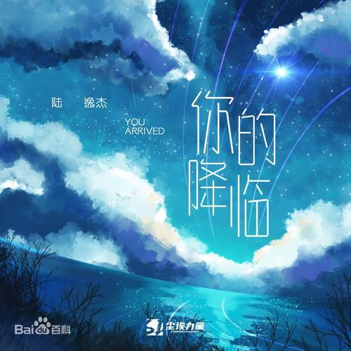
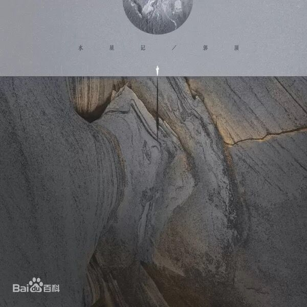
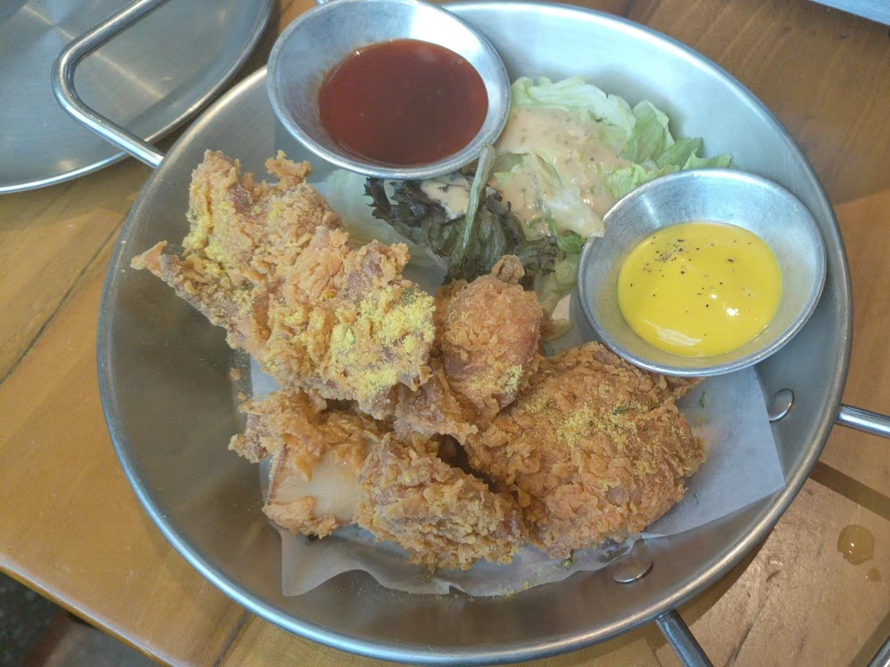
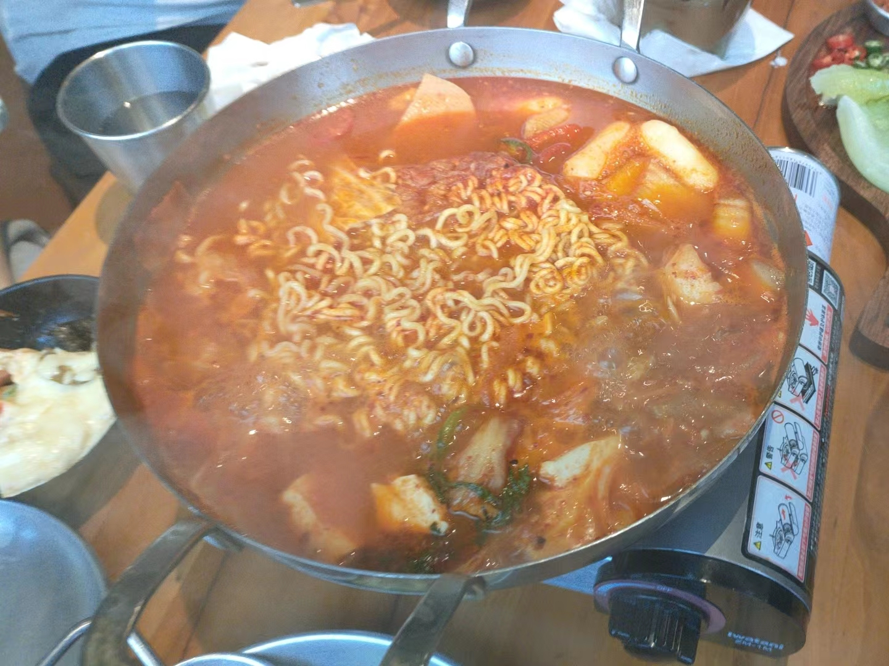
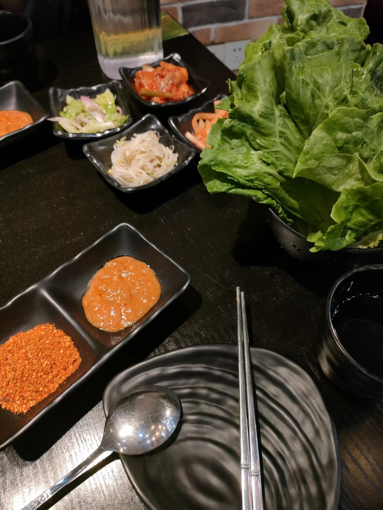
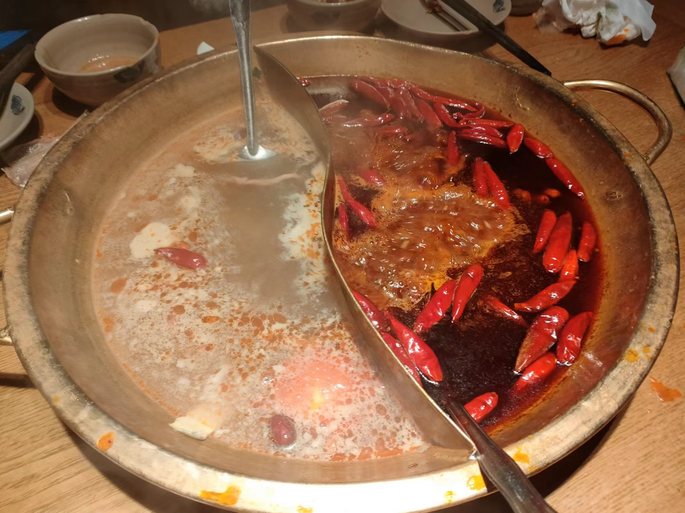

歌曲
影视
明星
食物
| 我喜欢的歌曲 | |||
| 歌曲名称 | 概念图片 | 歌曲简介 | 高潮歌词 |
|---|---|---|---|
| Darl+ing | 《Darl+ing》是SEVENTEEN演唱的歌曲， 由BUMZU、WOOZI、Shannon作词， BUMZU、Hyun Hwang(MonoTree)、WOOZI作曲， 收录在2022年4月15日发行的专辑《Darl+ing》中。 | ‘Cause I know that our love was hotter than the sun Yeah the taste of this tequila I’m drinking now Isn’t bitter than my heart | |
| Honest | 《Honest》是rei brown演唱的歌曲，于2020年9月18日发行。 讲述的是一个关于背叛的故事，标准的关系中是随着一个转折而破裂 — 主人公不愿意成为受害者。 抓耳以及热情的节奏配上放肆的吉他旋律和持续的鼓点，为整首歌曲奠定了基调，反倒更适合暖和之地。 | I never loved you if we're honest honest I know this isn't what we promised promised Thought you could be the one I wanted But you're so far far | |
| 你的降临 |  | 《你的降临》是由尹游观作词，唯今作曲，茶茶演唱的歌曲，发行于2021年6月22日。 [1] 收录于同名专辑《你的降临》中。 | 像季风一样迅疾你突然降临 漂洋过海的雨滴给我所有勇气 亲吻你眼睛以肩背相抵 在你的星空有我烟火的痕迹 |
| 水星记 |  | 《水星记》(Mercury Records)是由郭顶作词、作曲并演唱的歌曲， 作为第二波抒情主打曲收录于郭顶2016年11月25日发行的专辑《飞行器的执行周期》。 | 还要多远才能进入你的心 还要多久才能和你接近 咫尺远近却无法靠近的那个人 也等着和你相遇 环游的行星怎么可以拥有你 |
| 我喜欢的电视剧 | |||
| 电视剧名称 | 概念图片 | 电视剧简介 | 主要参演人员 |
|---|---|---|---|
| 民国奇探 | 《民国奇探》讲述了在民国时期的上海滩，留英归来的高材生路垚、巡捕房探长乔楚生联手女记者白幼宁， 侦破一个个离奇案件、伸张正义的故事。 |
|
|
| 猎罪图鉴 | 《猎罪图鉴》采取双男主设置，讲述了因一起尘封旧案而结怨的“模拟画像师”沈翊和刑警队长杜城， 在机缘巧合下被迫搭档，联手侦破多起离奇疑案，共同追踪谜底真相的故事 |
|
|
| 卿卿日常 | 《卿卿日常》改编自多木木多的小说《清穿日常》，讲述了新川六少主尹峥与霁川少女李薇因意外结缘， 共同开启了一段状况百出却又相映成趣的生活故事。 |
|
|
| 云襄传 | 《云襄传》改编自方白羽创作的小说《千门》，讲述了翩翩公子云襄背负门中使命步入江湖 ，结识了几位好友，众人在波诡云谲的江湖纷争中捍卫仁德与心中正义的故事 |
|
|
LEE KNOW
中文名李旻浩，南韩男团Starykids内成员之一，队内定位为主舞
Han
中文名韩知城，南韩男团Starykids内成员之一，队内定位为ACE
李旻浩&韩知城——旻城，全球美帝cp
"我们是彼此的soulmate"
"你喜欢我，但你对我的喜欢是那种喜欢吗？" ——“我对哥的喜欢应该是那种喜欢？”
“我很普通吧，跟哥相比的话” ——“我喜欢普通”
“我不虚情假意，我爱你！”
 

